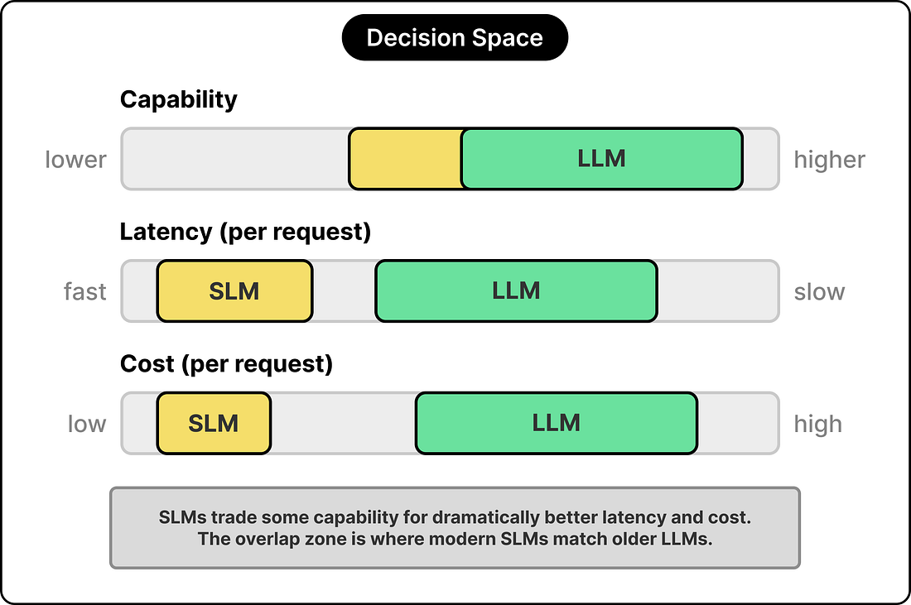
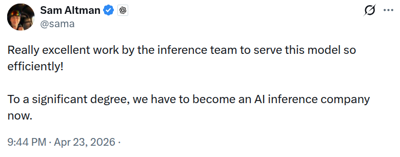
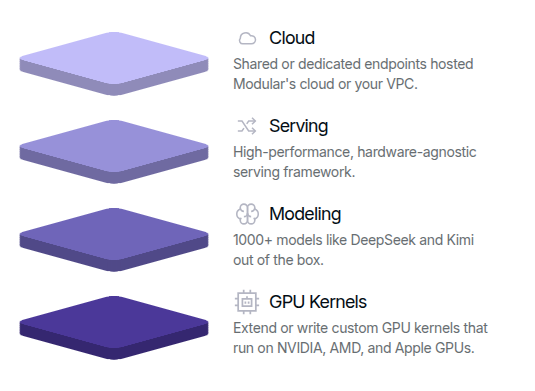

Why managed inference exists
Hugging Face Inference Endpoints give you a managed way to put a model behind a production API.
- You focus on the model and user experience.
- The platform handles the tedious parts of deployment and scaling.
- It is the fastest route from a trained model to a usable endpoint.
For alternatives across the stack, see the companion lesson on cloud providers.
What the platform abstracts away
Before managed serving
- Provision GPUs or CPUs
- Build and patch containers
- Expose secure endpoints
- Autoscale and monitor traffic
- Debug crashes under load
With managed serving
- Pick a model
- Choose hardware
- Deploy an endpoint
- Send requests over HTTP
- Iterate on latency, quality, and cost
LLM vs SLM
The main sizing choice is not just can the model answer? It is whether the answer is worth the latency and cost you pay per request.
- SLM: roughly
0.5B to 14B parameters.
- LLM: tens to hundreds of billions of parameters.
- In practice, there is an overlap zone where a good SLM is enough.

Choosing the right model size
Three tradeoffs
- Capability: harder tasks benefit from larger models.
- Latency: larger models process more data per request.
- Cost: larger models need more specialized hardware.
Rule of thumb
- Do not use an expensive cloud LLM for a tiny routing or filtering task.
- Do not force a tiny local model to solve a reasoning-heavy problem.
- Match the model to the burden of the request.
Best of both: compose models
The best 2026 systems rarely choose one model for everything. They combine small local models and larger cloud models into one serving architecture.
- Routing sends easy work to cheaper models.
- Guardrails check inputs and outputs.
- Speculative decoding accelerates larger models with smaller draft models.
Routing: spend the budget selectively
- A lightweight SLM acts as the gatekeeper for each request.
- Simple tasks stay local: classification, extraction, simple translation.
- Harder tasks escalate to a stronger cloud model.
Why this matters
- Lower latency on common requests.
- Lower cost because the large model is used less often.
- Better specialization when routers can dispatch to different expert models.
Guardrails: use small models as filters
- Check prompts before they leave your system.
- Mask or remove PII before sending data to external providers.
- Validate outputs for safety, format, and policy compliance.
- Unmask or post-process the response before returning it to users.
Guardrails improve:
- privacy and security
- output reliability
- structured-output success rate
Speculative decoding
Speculative decoding makes a large model faster by letting a smaller draft model propose likely next tokens, then having the larger model verify them in batches.
“Our method can accelerate existing off-the-shelf models without retraining or architecture changes.”
The rise of inference engineering
Inference engineering is the discipline of making live model serving:
- fast
- reliable
- scalable
- cost-effective
It covers much more than speculative decoding: batching, scheduling, memory management, concurrency, observability, and hardware-aware optimization.
Inference Engineering at AI Companies

Why inference engineering became its own field
Few years ago, this work mostly lived inside frontier labs. Now the tooling has matured enough that teams outside those labs can build efficient serving stacks.
- Open-source serving frameworks are production-grade.
- Model traffic is large enough that small efficiency wins matter.
- Hardware is expensive enough that utilization becomes a business problem.
- User expectations make latency an actual product feature.
Three important serving stacks
vLLM
Fast, accessible LLM serving with strong ecosystem adoption.
SGLang
High-performance serving with strong support for complex generation workflows.
Modular
A broader stack spanning kernels, runtimes, cloud deployment, and Mojo.
vLLM and SGLang
vLLM
- Originated at the Sky Computing Lab at UC Berkeley.
- Known for the PagedAttention line of work.
- Became a foundation for mainstream enterprise serving.
- Now stewarded through the PyTorch Foundation.
SGLang
- Introduced by LMSYS Org with strong Berkeley roots.
- Built for high-performance and agent-friendly generation.
- Closely associated with work around RadixAttention.
- Strong fit for complex multi-step LLM applications.
Modular
Modular offers fully-managed deployments for the latest open source models, or you can create a self-hosted endpoint with any model.

Modular Stack
Co-Founder: Chris Lattner
Chris Lattner
Distinguished Leader who founded and scaled critical infrastructure including LLVM, Clang, MLIR, Cloud TPUs and the Swift programming language. Chris built AI and core systems at multiple world leading technology companies including Apple, Google, SiFive and Tesla.
“AI is powerful - but expensive, fragmented, and locked into a few hardware ecosystems. We believe everyone should have the freedom to build and run AI anywhere, without limits. Our mission: make AI’s compute layer unified, efficient, and accessible to all.”
Kernel development
The Mojo language allows you to write custom GPU kernels for MAX graphs that run on NVIDIA, AMD, and Apple GPUs.
Mojo 🔥 GPU Puzzles: A hands-on guide to mastering GPU programming with Mojo. Write like Python, run like C++.
Takeaways
- Managed endpoints are the fastest way to serve a model in production.
- Model serving is really a systems design problem, not just a model-choice problem.
- Strong production architectures often combine SLMs, LLMs, and guardrails.
- Inference engineering is now a core software discipline for AI products.